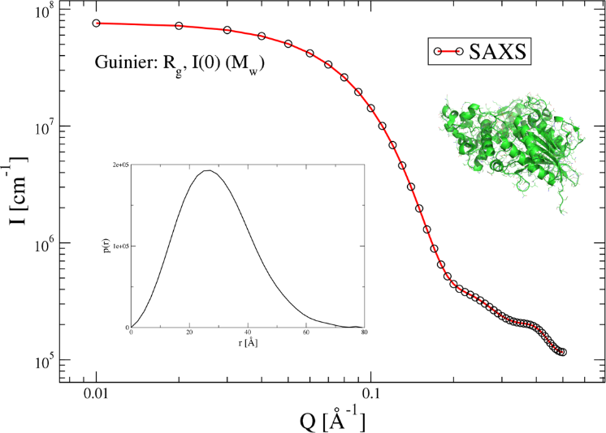

Proteins based drugs are used for the treatment of a variety of diseases. The solution structure of the proteins are of great importance for their intended use, as changes in structural conformation can lead to changes in their function. Furthermore, if the proteins assemble into larger complexes, this can be used to control the release profile of the drug, but can also lead to aggregation, which could render the treatment ineffective or even detrimental to the patient. In this project, pharmaceutically relevant proteins (e.g. insulin) would be studied under a wide range of formulation conditions (concentration, pH, salt, …) to study how the structure is affected. The project could involve simple sample preparation, performing SAXS experiments at University of Copenhagen, data analysis, and probably taking part in experiments at a synchrotron facility in Europe.
 Figure 1: Simulated SAXS pattern of a phytase enzyme (shown in green in the top right). The insert in the bottom left shows the p(r) function calculated from the SAXS curve. It shows the different distances present in the structure.
The data analysis can be done model-free or model-based, depending on the protein and your skills and interests. In model-free analysis information of the overall structural features are extracted from the SAXS patterns without actually modeling the structure. This includes extracting parameters such as the radius of gyration Rg (a measure of the overall size) and the p(r) function, which describes all of the possible lengths in the structure and provides some information of the shape of the protein (Figure 1). Students interested in more advanced data analysis can do model-based analysis. This could include so-called ab-initio modeling of the protein structures with bead-models or even more detailed analysis on an atomistic level. During the project work you will get theoretical as well as practical experience with small angle scattering experiments and data analysis. Furthermore, you will be part of a lively research group with many postdocs and PhD students working on different projects in structural biology and in the application of small-angle scattering to industry-relevant materials. If you are interested or you have any questions, contact Erik Brok or Martin Schmiele. See Group members page.